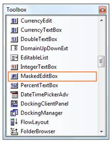
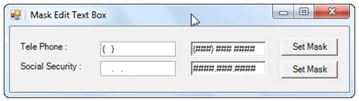
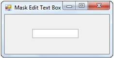

The MaskedEditBox control provides full support for the Windows Forms designer. You can use the MaskedEditBox through the designer by following the below given steps.
1. Drag and drop the MaskedEditBox control onto your form from the controls toolbox.

Figure 528: MaskedEditBox in Toolbox
2. Set the MaskedEditBox.Mask property for the control. This property controls the behavior of the control at run time. If no mask is specified, the control will behave the same as a standard Windows Forms TextBox control.

Figure 529: MaskedEditBox created Through Designer
Examples of some common masks are,
|
Mask |
Usage |
|
###-##-#### |
US Social security number mask (the # symbol allows numeric entry only in that position and the - symbol is literal); Example 222-22-2222. |
|
(###) ### #### |
US Telephone number mask; Example (919) 481 1974. |
|
##/##/#### |
Short date mask; Example 04/14/2005. |
|
##:## |
Short time mask; Example 12:24. |
|
>?<???????????? |
First name or last name; The first letter is uppercase and the other letters are all lowercase; Example: Syncfusion. |
The MaskedEditBox control can be used programmatically through code as detailed below.
1. Include the required namespace.
|
[C#]
using Syncfusion.Windows.Forms.Tools; |
|
[VB.NET]
Imports Syncfusion.Windows.Forms.Tools |
2. Create an instance of the MaskedEditBox control.
|
[C#]
private Syncfusion.Windows.Forms.Tools.MaskedEditBox maskedEditBox1; this.maskedEditBox1=new MaskedEditBox(); |
|
[VB.NET]
Private maskedEditBox1 As Syncfusion.Windows.Forms.Tools.MaskedEditBox Me.maskedEditBox1 = New MaskedEditBox() |
3. Set MaskedEditBox.Mask property.
|
[C#]
// The mask string. this.maskedEditBox1.Mask = ">?<????????????"; this.maskedEditBox1.Location = new System.Drawing.Point(70, 29); |
|
[VB.NET]
' The mask string. Me.maskedEditBox1.Mask = ">?<????????????" Me.maskedEditBox1.Location = New System.Drawing.Point(70, 29); |
4. Add the MaskedEditBox control to the form.
|
[C#]
this.Controls.Add(this.maskedEditBox1); |
|
[VB.NET]
Me.Controls.Add(Me.maskedEditBox1) |

Figure 530: MaskedEditBox created Through Code